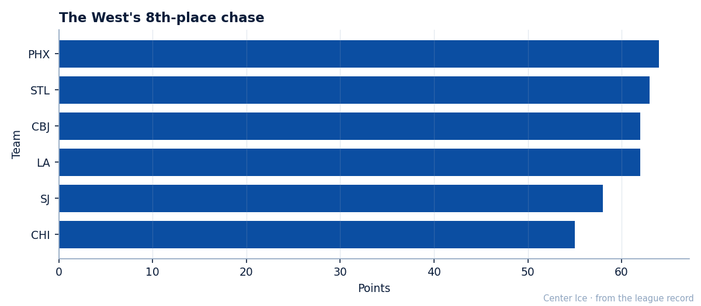
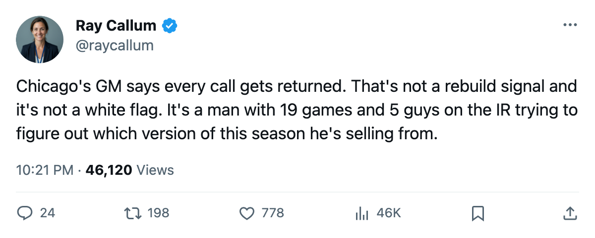

Numbers Game: Chicago trails Phoenix by 9 points in the West's last seat
The Blackhawks beat Philadelphia on Saturday and sit 55 points in 13th place. The trade deadline is 19 days away and their GM says every call gets returned.
 Ray CallumSenior correspondent · Home Ice Network
Ray CallumSenior correspondent · Home Ice NetworkThe piece
 Chicago Blackhawks sits 9 points behind
Chicago Blackhawks sits 9 points behind  Phoenix Coyotes for the 8th and final playoff seat in the Western Conference. The Blackhawks have 19 games left. Phoenix has 20. Chicago's maximum ceiling is 93 points. Phoenix currently holds 64.
Phoenix Coyotes for the 8th and final playoff seat in the Western Conference. The Blackhawks have 19 games left. Phoenix has 20. Chicago's maximum ceiling is 93 points. Phoenix currently holds 64.

The arithmetic keeps Chicago alive, but the window is narrow. The Blackhawks would need to win most of their remaining games while Phoenix loses most of its own, and they have 5 players on the injured list while chasing.
 Theoren Fleury86 is out with a knee designation, targeted to return on 2005-03-20.
Theoren Fleury86 is out with a knee designation, targeted to return on 2005-03-20.  Kyle Calder80 carries an abdomen injury with a 2005-03-21 return.
Kyle Calder80 carries an abdomen injury with a 2005-03-21 return.  Igor Korolev74's wrist designation has a 2005-03-02 return date, the nearest of the three. Two more names sit on the shelf beyond those.
Igor Korolev74's wrist designation has a 2005-03-02 return date, the nearest of the three. Two more names sit on the shelf beyond those.
Chicago beat  Philadelphia Flyers 3-2 at home on 2005-02-25, one of the few bright spots in a 19-31-9 season that has produced 11 wins at home and 12 on the road in 63 games. The 55 points put them dead last in this race, 3 points behind
Philadelphia Flyers 3-2 at home on 2005-02-25, one of the few bright spots in a 19-31-9 season that has produced 11 wins at home and 12 on the road in 63 games. The 55 points put them dead last in this race, 3 points behind  San Jose Sharks and 9 behind the Coyotes.
San Jose Sharks and 9 behind the Coyotes.
General manager Jason Hughes told The Tunnel's Jan Kowalczyk on 2005-02-16 that the club is listening: "We're listening to everyone. Every call that comes in gets returned." The trade deadline falls 19 days from now, on 2005-03-19.
Hughes also said the record belongs to the present tense: "The record is what it is. The 9 and 18, that belongs..." The 19 and 31 now, same thing.
Chicago hosts  Nashville Predators on 2005-03-01, a club with 35 wins and 84 points. The Blackhawks then visit
Nashville Predators on 2005-03-01, a club with 35 wins and 84 points. The Blackhawks then visit  Colorado Avalanche on 2005-03-02 and
Colorado Avalanche on 2005-03-02 and  Dallas Stars on 2005-03-05. Three straight against clubs with winning records, starting tonight's rest followed by tomorrow's game.
Dallas Stars on 2005-03-05. Three straight against clubs with winning records, starting tonight's rest followed by tomorrow's game.
